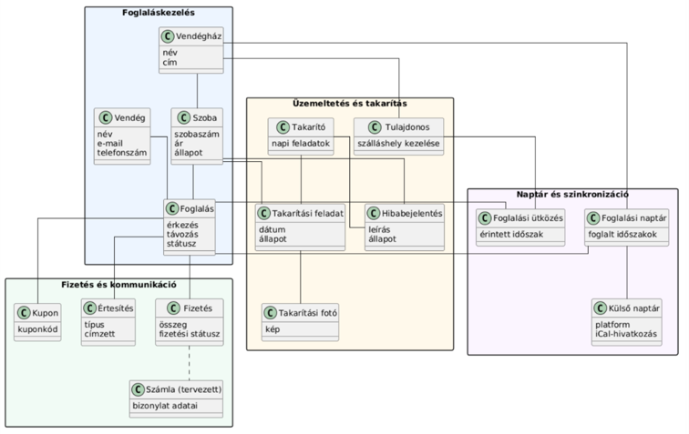

Miskolci Egyetem GÉIK • Szoftvertechnológia (Adatbázis-tervezéssel) • Analízis fázis (ANAL01)
Analízis modell – Objektumorientált szerkezeti és viselkedési specifikáció
Projekt címe: Automatizált vendégház-menedzsment és kommunikációs rendszer (Ácsingozó Vendégház)
Jelen dokumentum a Szoftverkövetelmény-specifikációban (SRS) rögzített követelmények objektumorientált elemzését tartalmazza. Bemutatja a rendszer négy logikai alrendszerre bontását, az alrendszerek közötti adatáramlást, a részletes analízis osztálydiagramokat, a fő üzleti folyamatok szekvenciadiagramjait, valamint a kulcsfontosságú üzleti entitások állapotdiagramjait.
Tartalomjegyzék
- 1. Az analízis modell felépítése
- 2. Rendszerszintű struktúra és alrendszerek
- 2.1. Áttekintő analízis osztálydiagram
- 2.2. Alrendszerek kapcsolatai és információáramlás
- 3. Foglaláskezelés alrendszer (F)
- 3.1. Részletes analízis osztálydiagram
- 3.2. Osztályok specifikációja
- 3.3. Szobafoglalás szekvenciadiagramja
- 3.4. Foglalás osztály állapotdiagramja
- 4. Fizetés és kommunikáció alrendszer (P)
- 4.1. Részletes analízis osztálydiagram
- 4.2. Osztályok specifikációja
- 4.3. Bankkártyás fizetés szekvenciadiagramja
- 4.4. Fizetés osztály állapotdiagramja
- 5. Naptár és szinkronizáció alrendszer (N)
- 5.1. Részletes analízis osztálydiagram
- 5.2. Osztályok specifikációja
- 5.3. Naptárszinkronizáció szekvenciadiagramja
- 6. Üzemeltetés és takarítás alrendszer (U)
- 6.1. Részletes analízis osztálydiagram
- 6.2. Osztályok specifikációja
- 6.3. Szobastátusz frissítésének szekvenciadiagramja
- 6.4. Takarítási feladat állapotdiagramja
1. Az analízis modell felépítése
Az analízis modell célja, hogy az üzleti problémateret technológiafüggetlen, objektumorientált fogalmakkal írja le, hidat képezve a felhasználói követelmények és a későbbi adatbázis-, illetve szoftvertervezési fázis között. A modellt három egymást kiegészítő UML nézőpontból építettük fel:
- Statikus szerkezeti nézet (Osztálydiagramok és csomagkapcsolatok): rögzíti a tartományi osztályokat, azok attribútumait, felelősségi köreit (metódusait), az asszociációk multiplicitását, valamint a négy funkcionális alrendszer határait.
- Dinamikus interakciós nézet (Szekvenciadiagramok): időrendi sorrendben szemlélteti az aktorok, határfelületek, vezérlők és entitásosztályok közötti üzenetváltásokat a négy kiemelt üzleti folyamat során.
- Állapotviselkedési nézet (Állapotdiagramok): meghatározza a kritikus életciklusú objektumok (
Foglalás,Fizetés,Takarítási feladat) lehetséges állapotait, állapotátmeneteit és kiváltó eseményeit.
2. Rendszerszintű struktúra és alrendszerek
2.1. Áttekintő analízis osztálydiagram
A vendégház-menedzsment rendszer teljes tartományi modelljét négy jól elkülöníthető logikai csomagra (alrendszerre) tagoltuk: Foglaláskezelés, Üzemeltetés és takarítás, Fizetés és kommunikáció, valamint Naptár és szinkronizáció. Az áttekintő osztálydiagram bemutatja az összes kulcsosztályt és az alrendszereken átívelő főbb kapcsolatokat.

1. ábra: Rendszerszintű analízis osztálydiagram a négy logikai alrendszerrel
2.2. Alrendszerek kapcsolatai és információáramlás
Az alrendszerek közötti csatolás minimalizálása érdekében pontosan definiáltuk a csomagok közötti függőségeket és az átadott információk irányát:

2. ábra: Alrendszerek kapcsolatai és a csomagok közötti információáramlás
| Forrás → Cél | Kapcsolat iránya | Átadott információk és üzleti szerep |
|---|---|---|
| F → P / P → F | Foglaláskezelés ↔ Fizetés és kommunikáció | A Foglaláskezelés átadja a fizetési adatokat és értesítési igényeket (F → P), a Fizetés és kommunikáció pedig visszaküldi a tranzakció eredményét / fizetési státuszt (P → F). |
| F → N / N → F | Foglaláskezelés ↔ Naptár és szinkronizáció | A Foglaláskezelés továbbítja az új vagy módosított foglalási adatokat (F → N), míg a Naptár alrendszer szolgáltatja a szabad időpontokat és az észlelt ütközéseket (N → F). |
| F → U / U → F | Foglaláskezelés ↔ Üzemeltetés és takarítás | A Foglaláskezelés átadja a foglalásokat és érkezési/távozási adatokat a takarítás ütemezéséhez (F → U), az Üzemeltetés pedig jelzi az aktuális szobaállapotokat (U → F). |
| N → U / U → N | Naptár és szinkronizáció ↔ Üzemeltetés és takarítás | A Naptár alrendszer ütközési figyelmeztetéseket küld a tulajdonosnak (N → U), aki kezeli a naptárbeállításokat és feloldja a túlfoglalásokat (U → N). |
3. Foglaláskezelés alrendszer
A Foglaláskezelés alrendszer felel a vendégház szobakapacitásának nyilvántartásáért, a vendégek adatainak kezeléséért, a foglalási igények rögzítéséért és az üzleti szabályok (pl. átfedő foglalások tilalma) érvényesítéséért.
3.1. Részletes analízis osztálydiagram

3. ábra: Foglaláskezelés alrendszer – Részletes analízis osztálydiagram
3.2. Osztályok specifikációja
| Osztály neve | Attribútumok | Operációk (Metódusok) | Szerepkör és kapcsolatok |
|---|---|---|---|
Vendégház |
vendégházAzonosító, név, cím |
szobákLekérdezése(), szobaKeresése(szobaszám), szobákSzűrése(vendégekSzáma) |
A szálláshely alapadatait tárolja; egy vendégházhoz 1..* szoba tartozik. |
Szoba |
szobaAzonosító, szobaszám, ár, befogadóképesség, állapot |
befogadóképességEllenőrzése(vendégekSzáma), elérhetőségEllenőrzése(érkezés, távozás), foglalásiÁrSzámítása(érkezés, távozás) |
Egyedi lakóegység; 0..* foglalás kapcsolódhat hozzá, de aktív időszakaik nem fedhetik át egymást. |
Vendég |
vendégAzonosító, név, e-mail, telefonszám, lakcím |
adatokEllenőrzése(), foglalásKezdeményezése(szoba, érkezés, távozás), foglalásokLekérdezése() |
A foglalást leadó személy; egy vendég 0..* foglalást hozhat létre. |
Foglalás |
foglalásAzonosító, érkezés, távozás, vendégekSzáma, státusz |
foglalásiAdatokEllenőrzése(), végösszegKiszámítása(), foglalásRögzítése(), státuszMódosítása(újStátusz), foglalásMódosítása(újAdatok), foglalásTörlése() |
A rendszer központi üzleti tranzakciója; kapcsolódik a Fizetés, Értesítés és Foglalási naptár osztályokhoz. |
3.3. Szobafoglalás szekvenciadiagramja
A szekvenciadiagram a vendégoldali szobakereséstől a kuponkód opcionális érvényesítésén és a dupla elérhetőség-ellenőrzésen át a fizetési kapu hívásáig és a visszaigazoló e-mail kiküldéséig követi végig a folyamatot. Külön elágazás kezeli a versenyhelyzetből adódó foglalatlanságot, illetve a sikertelen fizetés utáni zárolásfeloldást.

4. ábra: Szobafoglalás leadása és automatikus visszaigazolás – Szekvenciadiagram
3.4. Foglalás osztály állapotdiagramja
A Foglalás objektum kezdeményezéskor a Fizetésre vár átmeneti állapotba kerül. Sikeres tranzakció esetén Kifizetve állapotba lép (ahol adatai módosíthatók, vagy lemondás esetén Törölt állapotba kerül), sikertelen vagy időtúllépéses fizetésnél pedig a foglalás megszűnik.

5. ábra: Foglalás osztály állapotdiagramja
4. Fizetés és kommunikáció alrendszer
A Fizetés és kommunikáció alrendszer végzi a kedvezménykuponok érvényesítését, a külső pénzügyi szolgáltatóval történő tranzakciókezelést, az automatikus e-mail-értesítések összeállítását, valamint előkészíti a későbbi elektronikus számlázási modult.
4.1. Részletes analízis osztálydiagram

6. ábra: Fizetés és kommunikáció alrendszer – Részletes analízis osztálydiagram
4.2. Osztályok specifikációja
| Osztály neve | Attribútumok | Operációk (Metódusok) | Szerepkör és kapcsolatok |
|---|---|---|---|
Fizetés |
fizetésAzonosító, összeg, fizetésiStátusz, tranzakcióAzonosító, fizetésIdőpontja |
fizetésIndítása(összeg), fizetésiEredményFeldolgozása(eredmény), státuszMódosítása(újStátusz), fizetésiAdatokLekérdezése() |
Egy foglaláshoz legfeljebb egy sikeres fizetés tartozik (1 ↔ 0..1). |
Kupon |
kuponkód, kedvezményMértéke, érvényességVége, aktív |
érvényességEllenőrzése(), kedvezménySzámítása(eredetiÖsszeg), kedvezményAlkalmazása(eredetiÖsszeg) |
Kedvezmények érvényesítése; egy foglalás 0..1 kupont használhat fel, egy kupon 0..* foglaláshoz kapcsolódhat. |
Értesítés |
értesítésAzonosító, típus, címzett, küldésIdőpontja, küldésiStátusz |
értesítésLétrehozása(típus, címzett), üzenetÖsszeállítása(foglalásiAdatok), értesítésKüldése(), küldésiStátuszMódosítása(újStátusz) |
Visszaigazoló, emlékeztető és ütközésjelző üzenetek kezelése (1 foglaláshoz 0..* értesítés). |
Számla («tervezett») |
számlaAzonosító, számlaszám, kiállításDátuma, összeg, bizonylatAdatok |
számlaLétrehozása(fizetésiAdatok, számlázásiAdatok), számlaAdatokLekérdezése(), bizonylatMentése(bizonylatAdatok) |
Későbbi fejlesztési elem (Could have); egy sikeres fizetéshez 0..1 számla kapcsolódik. |
4.3. Bankkártyás fizetés szekvenciadiagramja
A szekvenciadiagram részletezi a kuponkedvezmény kiszámítását, a külső fizetési szolgáltató felé indított tranzakciót, valamint a fizetési eredmény visszacsatolását a Foglaláskezelés és az Értesítés osztályok felé.

7. ábra: Bankkártyás fizetés és automatikus visszaigazolás – Szekvenciadiagram
4.4. Fizetés osztály állapotdiagramja
A Fizetés példány létrehozásakor Fizetés indítva állapotba kerül, a fizetési kapu felé továbbításkor Feldolgozás alatt státuszba lép, majd a tranzakció kimenetelétől függően Sikeres vagy Sikertelen végállapotot vesz fel.

8. ábra: Fizetés osztály állapotdiagramja
5. Naptár és szinkronizáció alrendszer
A Naptár és szinkronizáció alrendszer biztosítja az egységes foglaltsági nyilvántartást, az 5 percenkénti kétirányú iCal-adatcserét a külső szállásportálokkal (Booking.com, Airbnb), valamint a párhuzamos foglalásokból eredő túlfoglalások azonnali blokkolását és riasztását.
5.1. Részletes analízis osztálydiagram

9. ábra: Naptár és szinkronizáció alrendszer – Részletes analízis osztálydiagram
5.2. Osztályok specifikációja
| Osztály neve | Attribútumok | Operációk (Metódusok) | Szerepkör és kapcsolatok |
|---|---|---|---|
Foglalási naptár |
naptárAzonosító, foglaltIdőszakok, utolsóFrissítés |
elérhetőségEllenőrzése(szoba, érkezés, távozás), időszakZárolása(szoba, érkezés, távozás), zárolásFeloldása(szoba, érkezés, távozás), foglalásRögzítése(foglalás), foglaltságiAdatokLekérdezése(), foglaltságiAdatokFrissítése(foglalásiAdatok), ütközésEllenőrzése(foglalás) |
A vendégház központi foglaltsági naptára; 0..* külső naptárral szinkronizál, és nyilvántartja a foglalásokat. |
Külső naptár |
külsőNaptárAzonosító, platform, iCalHivatkozás, utolsóSzinkronizáció, szinkronizációsStátusz |
szinkronizációIndítása(), külsőAdatokLekérdezése(), foglalásokÖsszehasonlítása(központiAdatok), foglaltságiAdatokTovábbítása(foglaltságiAdatok), szinkronizációsStátuszMódosítása(újStátusz), utolsóSzinkronizációRögzítése(időpont) |
Egy adott OTA csatorna (Booking.com, Airbnb) iCal-végpontját és szinkronizációs állapotát reprezentálja. |
Foglalási ütközés |
ütközésAzonosító, érintettIdőszak, észlelésIdőpontja, státusz |
ütközésLétrehozása(érintettFoglalások, érintettIdőszak), érintettFoglalásokLekérdezése(), értesítésKezdeményezése(), státuszMódosítása(újStátusz), ütközésRendezése() |
Átfedő foglalások észlelésekor létrejövő riasztási rekord, amely értesíti a tulajdonost és nyomon követi a rendezést. |
5.3. Naptárszinkronizáció szekvenciadiagramja
A szekvenciadiagram bemutatja az időzítő által 5 percenként indított szinkronizációs ciklust, az ütközésmentes foglalásimportálást, valamint az ütközésészleléskor lefutó riasztási és tulajdonosi rendezési folyamatot.

10. ábra: Naptár-szinkronizáció és túlfoglalás blokkolása – Szekvenciadiagram
6. Üzemeltetés és takarítás alrendszer
Az Üzemeltetés és takarítás alrendszer támogatja a tulajdonosi felügyeletet és a takarító személyzet mobilalapú napi munkavégzését, beleértve a fotóval igazolt készre jelentést, a szobastátuszok automatikus frissítését, a műszaki hibabejelentést és az offline gyorsítótárazást.
6.1. Részletes analízis osztálydiagram

11. ábra: Üzemeltetés és takarítás alrendszer – Részletes analízis osztálydiagram
6.2. Osztályok specifikációja
| Osztály neve | Attribútumok | Operációk (Metódusok) | Szerepkör és kapcsolatok |
|---|---|---|---|
Tulajdonos |
tulajdonosAzonosító, név, e-mail, telefonszám |
takarításiFeladatokLekérdezése(), szobaÁllapotLekérdezése(szoba), takarításiFotóMegtekintése(feladat), hibabejelentésekLekérdezése() |
A vendégház üzemeltetője; lekérdezi a szobák tisztasági állapotát, az igazoló fotókat és a hibabejelentéseket. |
Takarító |
takarítóAzonosító, név, felhasználónév, e-mail |
napiFeladatokLekérdezése(dátum), takarításMegkezdése(feladat), takarításBefejezése(feladat, fénykép), hibaBejelentése(szoba, leírás) |
A takarító személyzet tagja; 0..* takarítási feladatot végez el és 0..* hibabejelentést rögzíthet. |
Takarítási feladat |
feladatAzonosító, dátum, állapot, kezdésIdőpontja, befejezésIdőpontja |
állapotLekérdezése(), takarításIndítása(időpont), takarításBefejezése(időpont), állapotMódosítása(újÁllapot), szobaÁllapotFrissítése() |
Egy adott szoba napi takarítási munkája; befejezésekor 0..1 igazoló fotó kapcsolódik hozzá, és Tiszta állapotba állítja a szobát. |
Takarítási fotó |
fotóAzonosító, képHivatkozás, feltöltésIdőpontja |
fényképMentése(kép), fényképLekérdezése(), feltöltésRögzítése(időpont) |
A takarítás elvégzését dokumentáló fénykép metaadatai és elérési hivatkozása. |
Hibabejelentés |
hibabejelentésAzonosító, leírás, állapot, bejelentésIdőpontja |
hibabejelentésLétrehozása(szoba, takarító, leírás), hibabejelentésLekérdezése(), státuszMódosítása(újStátusz), hibabejelentésLezárása() |
A szobában észlelt műszaki meghibásodás nyilvántartása a tulajdonos felé. |
6.3. Szobastátusz frissítésének szekvenciadiagramja
A szekvenciadiagram végigköveti a takarító mobilfelületen végzett műveleteit: a napi lista lekérdezését, a munka indítását, az opcionális hibabejelentést, valamint az online és offline (helyi gyorsítótáras, majd hálózat-helyreálláskor automatikusan szinkronizáló) készre jelentést.

12. ábra: Szoba státuszának frissítése mobilról – Szekvenciadiagram
6.4. Takarítási feladat állapotdiagramja
A Takarítási feladat az Elvégzésre vár állapotból indul, a munka megkezdésekor Folyamatban állapotba lép (ahol hibabejelentés is rögzíthető), majd internetkapcsolattól függően közvetlenül vagy a Feltöltésre vár offline pufferszakaszon keresztül jut el a Befejezett állapotba.

13. ábra: Takarítási feladat osztály állapotdiagramja